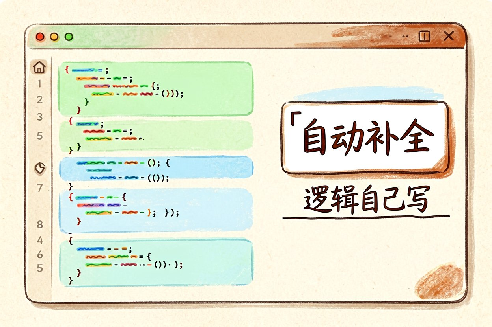
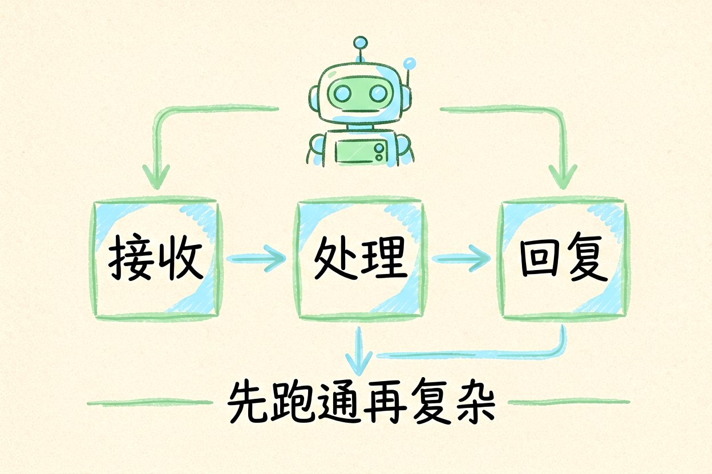

预算为零也能用的免费 AI 工具清单
预算为零也想用上 AI？这波免费工具覆盖写作、画图、音视频和编程，挑顺手的就够。
免费AI工具这两年越来越多，但"免费"常有限额或功能阉割。下面按用途列能用的，也标清坑点，省得你踩完才发现有门槛。先跑通再考虑付费，别被付费墙劝退在门口。清单会变，关键是你学会挑的方法，而不是背下名字，方法比名单活得久。
写作类：先解决"写得出"
DeepSeek、通义千问都有免费额度，写提纲、改文案够用。缺点是长文容易跑偏，要分段盯。需要更顺手的中文写作，国内模型往往比海外免费档更稳。写长文时每千字回看一次，比一口气写完再改省力。免费档适合草稿和灵感，定稿阶段还是自己把关最稳。长文让它分章节写，每章给明确字数和要求，比一次要三千字跑偏少。写作类工具最怕你含糊，提示词越具体返工越少。把常用指令存成模板，下次直接套，效率立刻上来。
画图类：找氛围别找精度
即梦、通义万相免费档出概念图很快，但文字和手部常翻车。做封面气氛图可以，做带招牌的门店图就别指望。真要干净成品，准备后期修。把免费档当草图工具，能省很多找灵感的时间。商用图务必查版权和水印，免费不等于可卖，这一步别省。同一张提示词多跑三版挑，比死磕一张强。AI 出图随机性大，挑比改快。批量做配图时先定统一画风词，整套视觉才不打架，公众号和商城尤其吃统一感。
音视频类：剪映与海螺
剪映免费版自带自动字幕和不少模板，新手最省心。海螺这类能免费试生成短视频，适合探路。注意导出常带水印，商用前看清规则。先用免费额度判断值不值得开会员，再掏钱不迟。字幕和配音是视频最费时的两步，自动化的省时感最明显。新手别一上来买付费剪辑软件，免费档够你跑通全流程。等真靠视频变现了，再按需求升级，钱花在刀刃上。工具是杠杆，内容才是支点，本末倒置最常见。
编程类：通义灵码与 CodeGeeX

这两个都有免费补全，写脚本、改 bug 能提速。企业项目注意代码别进公有云训练，敏感仓库用本地方案更稳。免费补全适合个人和小项目，团队机密代码要走私有部署。补全不是替你写，是替你少打字，逻辑还得自己想清楚。新手用它学语法比翻文档快，但别养成"看不懂就让它写"的习惯，那学不会真本事。
智能体平台：先搭最小闭环

Coze、Dify 这类有免费额度，能让你不写代码就串起一个工作流。新手先用模板跑通一个"收到消息自动回复"的机器人，再谈复杂。免费档够学完核心概念，真上量再考虑私有部署，别一上来就纠结架构。平台免费档适合学和试，真跑业务量时注意调用次数上限，超限会静默失败，比报错更坑。
免费AI工具一张速查表
free_tools = {
"写作": "DeepSeek / 通义千问",
"画图": "即梦 / 通义万相",
"音视频": "剪映 / 海螺",
"编程": "通义灵码 / CodeGeeX",
}免费AI工具是入门利器，但别把关键业务押在会随时改限额的档位上，重要活儿留好退路。免费是起点，不是终点。每月花十分钟复看一遍常用工具的免费政策，比临时发现限额更省心。免费档常限制导出分辨率、带水印、禁商用，用前读一眼条款，别等发布才发现不能用。
本文信息核对于 2026-08-31。AI 产品的价格、免费额度与功能变动频繁，实际以各工具官网当前说明为准。